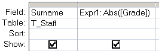

Function that returns the absolute value of a number (ignoring positive/negative sign)
Syntax
Abs (number)
The Abs function can also be used in an SQL query.
Abs() is often useful when working with boolean values.
The standard boolean values are FALSE=0 and TRUE=any non Zero value
(Access and VBA use -1 for TRUE, but SQL Server bit fields use 1)
Examples
In a query:

In VBA:
Dim dblDemo As Double
dblDemo = Abs (-123.4)
123.4
dblDemo = Abs (-1)
1
dblDemo = Abs (45.1)
45.1
“I've nothing much to offer, There's nothing much to take, I'm an absolute beginner” ~ David Bowie
Related:
Int - Return the integer portion of a number
Sgn - Return the sign of a number, positive or negative.
Excel has an identical function abs()